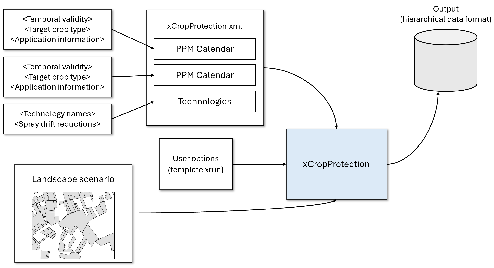
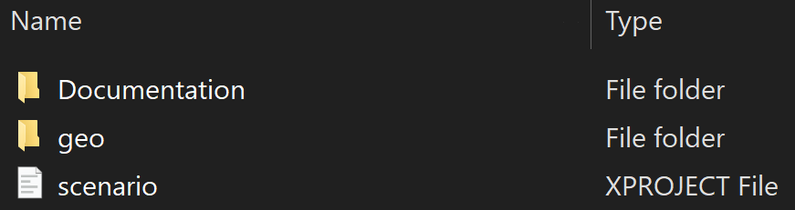
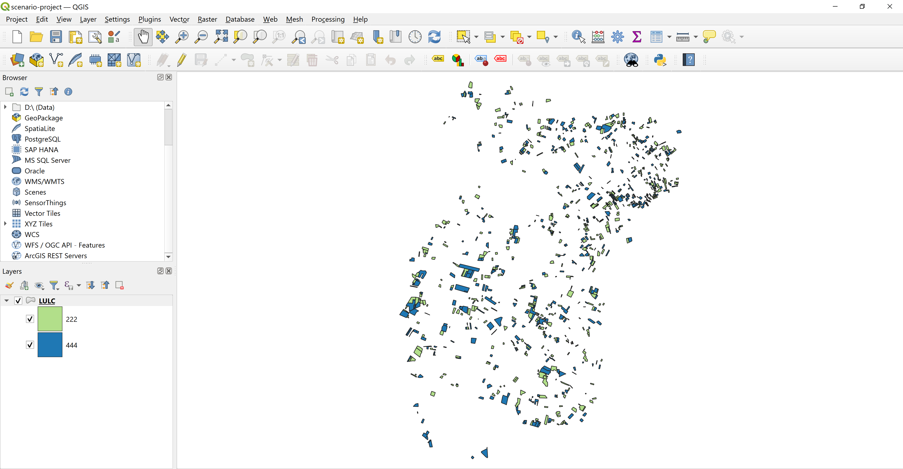
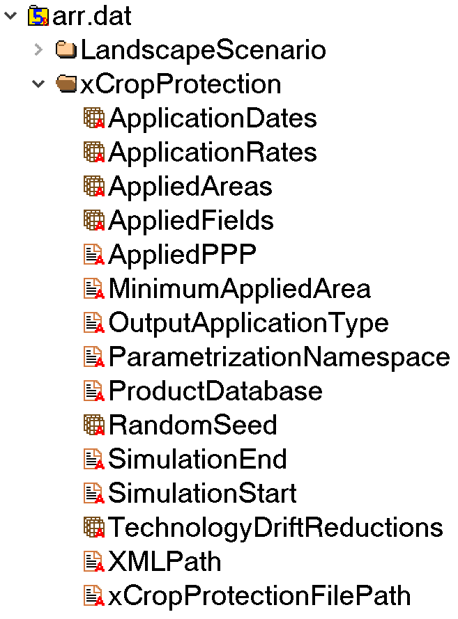

Get started with xCropProtection
Goal: Create a scenario that represents a series of product applications to one crop class.
In this tutorial, you'll learn the basics of xCropProtection. You'll prepare a simulation using xCropProtection and recommendations for product applications for a specific pest.
Note
In xCropProtection, the term PPP use scenario is used to describe a certain parameterization of xCropProtection including PPP application information, input/output scales, and temporal constraints. The term landscape scenario is used in the sense of a certain geographic region for which land use/cover, soil, weather, and habitat conditions have been defined as basis for landscape-scale pesticide exposure and effect modelling.

Requirements
Explore the landscape scenario
-
Navigate to the scenario/Demo-scenario folder in your local installation of xCropProtection. In this folder, you will find a Documentation folder, a geo folder, and a scenario.xproject file.

Open the Documentation folder which includes an image of the scenario, as well as a QGIS project containing the scenario.
-
Open the QGIS project.

You can use this project to explore the landscape scenario and inspect individual fields. Any changes you make to the LULC layer will affect the dataset used as input to xCropProtection.
Open the layer's attribute table. There are 1,000 fields in this scenario, 500 have the LULC type 222 and 500 have the LULC type 444. Take note of the fields ALVID and LULCTypeID. ALVID serves as a unique identifier for each feature, and LULCTypeID defines the land use type for each feature. Leave the project open, as we will refer to it later in this section.
-
Back in the Demo-scenario folder, open the geo folder. This folder holds the spatial data for the scenario as well as the package.xinfo file. Opening package.xinfo, you will see some information about the shapefile. Specifically,
base_landscape_geometries,feature_id_attribute, andfeature_type_attributeare important to simulation runs.base_landscape_geometriesrefers to the name of the target shapefile, including the .shp extension.feature_id_attributemust be the same as the name of the field in thebase_landscape_geometry's attribute table that provides a unique identifier for each feature. The type of this field must be an integer. Similarly,feature_type_attributemust be the same as the name of the field in thebase_landscape_geometry's attribute table that identifies the land use type of each feature. You can see how the XML attributes in package.xinfo match the values in the open attribute table in the QGIS project. Close the QGIS project once you are done exploring the landscape scenario. -
Navigate back to the Demo-scenario folder and open the file named scenario.xproject. This file contains metadata about the scenario and should be updated whenever there are changes to the scenario files.
Now that you understand the landscape scenario, it is time to prepare input to xCropProtection.
Create the Plant Protection Measure (PPM) Calendars
First, we will write the PPM Calendars for the PPP use scenario. PPM Calendars are XML files representing Plant Protection Measures and are composed of one or more Indications (measures to protect crops from certain pests). In xCP, an Indication is an explicit part of its parameterization. You can think of Indication elements, technically, as collections of ApplicationSequence elements. If more than one Application Sequence is defined in an Indication, these sequences are considered alternative Application sequences ("OR" related). The xCP parameterization entity Indication can be used to define alternative PPP use pattern, e.g., reflecting product market shares or fractions of biological or organic pest control means. Multiple Indications can be defined in an xCP parameterization, as many as necessary to represent a simple or complex real-world PPP use pattern in one or many crops. In this tutorial, we will be creating a very simple PPP use pattern.

The most important things to know are that PPM Calendars apply to one land use type (called the target crop type) and you should create unique PPM Calendars for each use scenario. The target crop type of a calendar is a numeric value corresponding to a numeric land use type in the landscape scenario (feature_type_attribute).
- Navigate to the CropProtection folder from the root of the repository. Open the folder PPMCalendars where you will see multiple other folders, each containing one or more PPM Calendars. Create a folder for your PPM Calendars named Tutorial-calendars. Open that folder.
- Open the Notepad application to start writing your XML file. If you have an application with auto-complete or other text functions like Visual Studio Code, you can also use those to write XML files. Each PPM Calendar starts by defining the root element,
PPMCalendar. Add the following lines to your file Everything we write in PPM Calendars should fall between the opening and closing tags that we just added. Next we need to determine theTemporalValidity,TargetCropType, andTargetFieldvalues. Let's say that this calendar should be applied every year that the simulation runs, so we will add the following line between the opening and closing PPMCalendar tags. Indentation is not necessary but makes XML files easier to read.The next two options restrict either the crop type or the field/feature ID that this calendar can be applied to. You can specify one or both, but in this case we will only define<PPMCalendar xmlns="urn:xCropProtectionLandscapeScenarioParametrization"> <TemporalValidity scales="time/simulation"> always </TemporalValidity> </PPMCalendar>TargetCropType. Any PPP applications defined in this calendar will only apply to fields/features with the LULC type 222. - Define
Indicationelements andApplicationSequenceelements. AnIndicationselement always needs to encloseIndicationelements; it can be thought of as a collection of multipleIndicationelements.You will notice that the<PPMCalendar xmlns="urn:xCropProtectionLandscapeScenarioParametrization"> <TemporalValidity scales="time/simulation"> always </TemporalValidity> <TargetCrops type="list[int]" scales="global"> 222 </TargetCrops> <Indications> <Indication type="xCropProtection.ChoiceDistribution" scales="time/year, space/base_geometry"> </Indication> </Indications> </PPMCalendar>Indicationelement has a type of "xCropProtection.ChoiceDistribution". This means that only one of its child elements will be chosen to be applied (sampled for each field and year). It also means that probability values need to be defined for each child element. In this tutorial, thisIndicationrepresents the possible response to Mullein bugs in apples and we will provide two product options.<PPMCalendar xmlns="urn:xCropProtectionLandscapeScenarioParametrization"> <TemporalValidity scales="time/simulation"> always </TemporalValidity> <TargetCrops type="list[int]" scales="global"> 222 </TargetCrops> <Indications> <Indication type="xCropProtection.ChoiceDistribution" scales="time/year, space/base_geometry"> <ApplicationSequence probability="0.65"> </ApplicationSequence> <ApplicationSequence probability="0.35"> </ApplicationSequence> </Indication> </Indications> </PPMCalendar> - Now that the
ApplicationSequenceelements have been defined, we can addApplicationelements for each sequence. AnApplicationSequencecan have one or moreApplicationelements, and if anApplicationSequenceis sampled, eachApplicationin the sequence will be applied to the field.In this step we have added one<PPMCalendar xmlns="urn:xCropProtectionLandscapeScenarioParametrization"> <TemporalValidity scales="time/simulation"> always </TemporalValidity> <TargetCrops type="list[int]" scales="global"> 222 </TargetCrops> <Indications> <Indication type="xCropProtection.ChoiceDistribution" scales="time/year, space/base_geometry"> <ApplicationSequence probability="0.65"> <Application> <Tank> <Products type="list[str]" scales="other/products"> Admire </Products> <ApplicationRates scales="other/products"> <ApplicationRate type="float" unit="g/ha" scales="global"> 380 </ApplicationRate> </ApplicationRates> </Tank> <ApplicationWindow type="xCropProtection.MonthDaySpan" scales="global"> 05-01 to 05-10 </ApplicationWindow> <Technology scales="global">Drift reduction nozzle</Technology> <InCropBuffer type="float" unit="m" scales="global">0</InCropBuffer> <InFieldMargin type="float" unit="m" scales="global">0</InFieldMargin> </Application> </ApplicationSequence> <ApplicationSequence probability="0.35"> <Application> <Tank> <Products type="list[str]" scales="other/products"> Calypso </Products> <ApplicationRates scales="other/products"> <ApplicationRate type="float" unit="g/ha" scales="global"> 217 </ApplicationRate> </ApplicationRates> </Tank> <ApplicationWindow type="xCropProtection.MonthDaySpan" scales="global"> 05-01 to 05-10 </ApplicationWindow> <Technology scales="global">Drift reduction nozzle</Technology> <InCropBuffer type="float" unit="m" scales="global">0</InCropBuffer> <InFieldMargin type="float" unit="m" scales="global">0</InFieldMargin> </Application> </ApplicationSequence> </Indication> </Indications> </PPMCalendar>Applicationto eachApplicationSequence. This means that every year, each field with the LULC type 222 will have a 65% chance of receiving an application of Admire, and a 35% chance of receiving an application of Calypso. For further exploration on this example, see this page - Save this file as tutorial-LULC-222.xml in the Tutorial-calendars folder.
Create the xCropProtection.xml file
- Navigate to the CropProtection folder from the root of the repository and open the Notepad application. We now need to create the xCropProtection.xml file. This file stores the location of PPM Calendars that will be used in an xCropProtection simulation as well as spray-drift reduction values for technologies.
- This file starts with an
xCropProtectionelement. The attributes of this element do not need to be changed by users and can be copied from the documentation for any file you create. - The two main elements of this file are PPM Calendars, represented as file paths to PPMCalendar.xml files, and Technologies, represented as
Technologyelements.Technologyelements may also be provided in a separate file, however, in this tutorial we will include them in this file.<xCropProtection xmlns="urn:xCropProtectionLandscapeScenarioParametrization" xmlns:xsi="http://www.w3.org/2001/XMLSchema-instance" xsi:schemaLocation="urn:xCropProtectionLandscapeScenarioParametrization ../model/core/components/xCropProtection/xCropProtection.xsd"> <PPMCalendars> </PPMCalendars> <Technologies> </Technologies> </xCropProtection> - Add a
PPMCalendarelement for each PPM Calendar that you would like to include. Here, we add one calendar pointing to the file we just created.<xCropProtection xmlns="urn:xCropProtectionLandscapeScenarioParametrization" xmlns:xsi="http://www.w3.org/2001/XMLSchema-instance" xsi:schemaLocation="urn:xCropProtectionLandscapeScenarioParametrization ../model/core/components/xCropProtection/xCropProtection.xsd"> <PPMCalendars> <PPMCalendar include="PPMCalendars/Tutorial-calendars/tutorial-LULC-222.xml"/> </PPMCalendars> <Technologies> </Technologies> </xCropProtection> - Add a
Technologyelement for each uniqueTechnologyvalue in the included PPM Calendars. In this tutorial, we only had one technology named "Drift reduction nozzle". Each different technology needs a value for the spray-drift reduction that occurs from using this technology (as a fraction).<xCropProtection xmlns="urn:xCropProtectionLandscapeScenarioParametrization" xmlns:xsi="http://www.w3.org/2001/XMLSchema-instance" xsi:schemaLocation="urn:xCropProtectionLandscapeScenarioParametrization ../model/core/components/xCropProtection/xCropProtection.xsd"> <PPMCalendars> <PPMCalendar include="PPMCalendars/Tutorial-calendars/tutorial-LULC-222.xml"/> </PPMCalendars> <Technologies> <Technology> <TechnologyName scales="global">Drift reduction nozzle</TechnologyName> <DriftReduction type="float" unit="1" scales="global">0.2</DriftReduction> </Technology> </Technologies> </xCropProtection>
Save this file as xCropProtection-tutorial.xml in the CropProtection folder.
Configure the user parameters
Next, we will configure the landscape model parameterization for this PPP use scenario. It is recommended to copy an existing landscape model parameterization file located in the root of the repository and change parameter values, rather than writing everything from scratch.
- Copy the text of an XRUN file to a new file named tutorial-configuration.xrun.
- Change the following elements:
Modeller: Your name or initialsProject: The name of the scenario, scenario/Demo-scenario. Be sure to include the scenario folder nameCropProtectionScenario: xCropProtection-tutorial.xml (including .xml)OutputApplicationType: This defines whether the output of xCropProtection has the scale product or active substance. This should be set to product for this demoSimulationStartandSimulationEnd: Set these to any two dates (withSimulationStartoccurring beforeSimulationEnd). For this tutorial, it is recommended to simulate only 1 year.SimID: Should be a short, descriptive string that represents this simulation. The SimID cannot be the same as any already existing simulation run in the run folder. For this tutorial, use tutorial-run
- Any elements not listed here should remain as they are.
- Save this file.
Run xCropProtection
- Drag tutorial-configuraion.xrun onto __start___.bat to run xCropProtection with the parameterization you have just generated.
-
Once the simulation is finished, navigate to run/tutorial-run/mcs/[MC ID]/store to find the output of the xCropProtection simulation. Open the file arr.dat with HDFView. Expand the xCropProtection section.

You can explore each of these datasets by right clicking on each and selecting "Open". 3. To export the results to a csv for easier inspection, first close arr.dat and copy its file path. Navigate to the analysis folder and open xCP_write_csv.ipynb. 4. Set
xcrop_arrdat_pathto arr.dat's file path. Setoutput_pathto the desired csv output location. Follow instructions in xCropProtection'sREADMEfor installing Python and the notebook requirements. 4. Open the result of xCP_write_csv.ipynb to see a csv of applications that occurred during the simulation. Viewing the csv results can be more easy to understand than directly viewing the output file.
This tutorial has been a walkthrough of how to prepare a scenario for xCropProtection. To start creating more complex PPP use scenarios, see the Templates section to learn more.